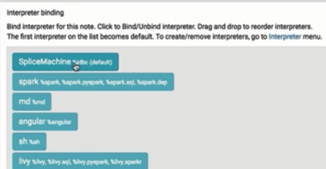
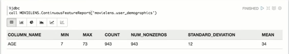
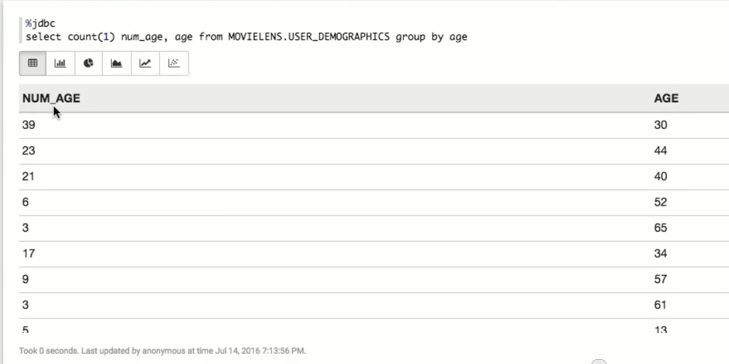
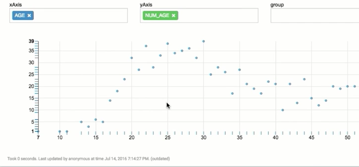
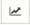

Connecting with Apache Zeppelin
This tutorial walks you through connecting Splice Machine with Apache Zeppelin, which is a web-based notebook project currently in incubation at Apache. In this tutorial, you'll learn how to use SQL to query your Splice Machine database from Zeppelin.
You can complete this tutorial by watching a short video, or by following the written directions below.
Watch the Video
The following video shows you how to connect Splice Machine with Apache Zeppelin..
Written Walk Through
This section walks you through using SQL to query a Splice Machine database with Apache Zeppelin..
-
Install Zeppelin:
If you're running on AWS, you can install the Zeppelin sandbox application; if you're using an on-premise database, we recommend following the instructions in this video.
-
Create a new interpreter to run with Splice:
-
Select the Interpreter tab in Zeppelin:

-
Click the Create button (in the upper right of the Zeppelin window) to create a new interpreter. Fill in the property fields as follows:
Name Whatever name you like; we're using SpliceMachine Interpreter Select jdbc from the drop-down list of interpreter types. default.url jdbc:splice:/myServer:1527/splicedb
(replace myServer with the name of the server that you're using)
default password admin default userId splice common.max_count 1000 default.driver com.splicemachine.db.jdbc.ClientDriver Artifacts Insert the path to the Splice Machine jar file; for example:
/tmp/db-client-2.5.0.1708-SNAPSHOT.jar
- Click the Save button to save your interpreter definition.
-
-
Create a note:
Select the Notebook tab in Zeppelin, and then click + Create new note.
- Specify a name and click the Create Note button.
-
Enable interpreters for the note. In this case, we move the Splice Machine interpreter to the top of the list, then click the Save button to make it the default interpreter:

-
Create a Zeppelin paragraph (a jdbc action) that calls a stored procedure. The procedure we're calling in this tutorial is named MOVIELENS; it is used to analyze data in a table. In this case, we're using this procedure to report statistics on the Age column in our movie watchers database. This Zeppelin paragraph looks like this:
%jdbc
call MOVIELENS.ContinuousFeatureReport('movielens.user_demographics');The %jdbc specifies that we're creating a paragraph that uses a JDBC interpreter; since we've made the SpliceMachine driver our default JDBC connector, it will be used.
-
The results of this call look like this:

-
We can also create a new paragraph that performs additional analysis; you'll see that whenever you run a paragraph in Zeppelin, it automatically leaves room at the bottom to create another paragraph.
%jdbc
select count(1) num_age, age from MOVIELENS.USER_DEMOGRAPHICS group by age;The results of this paragraph:

-
Change how you view your data
To get a better sense of what you can do with Zeppelin, we'll modify how we visualize this data:
- Click the rightmost settings icon, then click settings.
- Move age to the xAxis, and the number of people of that age to the yAxis.
-
You'll now see the distribution of ages:

- Click the  graphs button to select other data visualizations.